Guida a PicSpeak
PicSpeak aiuta a comunicare con le immagini: si toccano le tessere per comporre una frase e il dispositivo la legge ad alta voce. Questa guida è per gli adulti che accompagnano la persona: genitori, insegnanti, logopedisti e terapisti.
Le tre cose da sapere
- Il bambino tocca le tessere e PicSpeak dice la parola. Non può cambiare né cancellare niente. Comporre una frase
- L’adulto tiene premuti i tre puntini in alto a destra per 3 secondi: si apre il menu con Impostazioni, Crediti e Guida. Aprire il menu
- Le impostazioni sono protette da un PIN che create voi la prima volta. Dopo 5 minuti senza tocchi si richiudono da sole. Creare il PIN
1 I numeri arancioni nelle immagini corrispondono ai numeri dell’elenco sotto ciascuna immagine. Alcune immagini vengono da un tablet, altre da un telefono: le voci sono le stesse, a volte disposte una sotto l’altra.
Iniziare
Conoscere lo schermo
PicSpeak si apre dal browser, senza installare nulla e senza account. Funziona su tablet, telefono e computer (Safari, Chrome, Edge, Firefox).

- Striscia frase: raccoglie le tessere toccate. Si può spostare in basso (vedi Aspetto).
- Pulsanti della frase: altoparlante (legge tutta la frase), freccia con la × (toglie l’ultima parola), × (cancella tutto).
- Percorso: dice in quale pagina siete; Home riporta alla pagina principale.
- Tre puntini: solo per l’adulto, si tengono premuti per aprire il menu.
- Tabella: le tessere con immagine e parola. Le tessere grigie sono cartelle e aprono un’altra pagina.
Il bambino vede solo la tabella e la frase: nessun pulsante gli permette di modificare o cancellare le tessere.
Comporre e leggere una frase
- Toccate una tessera: PicSpeak dice la parola e la aggiunge alla frase.
- Toccate una cartella (per esempio «Cibo») per aprire la sua pagina; Home nel percorso riporta indietro.
- Toccate l’altoparlante per sentire tutta la frase.
- Per correggere toccate la freccia con la × (toglie l’ultima parola) oppure la × (cancella tutta la frase).
Toccando una parola già nella frase, PicSpeak la ripete senza toglierla.
Due gesti facoltativi, da attivare in ImpostazioniAspettoDisposizione e tocco:
- Spingi via la frase: un colpo deciso del dito sulla striscia la cancella.
- Scuoti per ricominciare: due scosse decise del tablet o del telefono riportano alla Home e cancellano la frase. Su iPad e iPhone il browser chiede il permesso di usare i sensori.
Si possono anche far leggere le parole solo alla fine, cancellare la frase da sola o tornare alla Home dopo ogni parola: vedi Decidere come si comporta la frase.
Aprire il menu dei tre puntini
- Appoggiate il dito sui tre puntini in alto a destra e teneteli premuti per 3 secondi. In cima allo schermo compare una barra blu che si riempie e la scritta «Continua a tenere premuto…».
- Quando la barra è piena si apre il menu. Un tocco veloce non fa nulla: così il bambino non lo apre per sbaglio.
- Scegliete una voce, oppure Chiudi (o il tasto Esc) per tornare alla tabella.

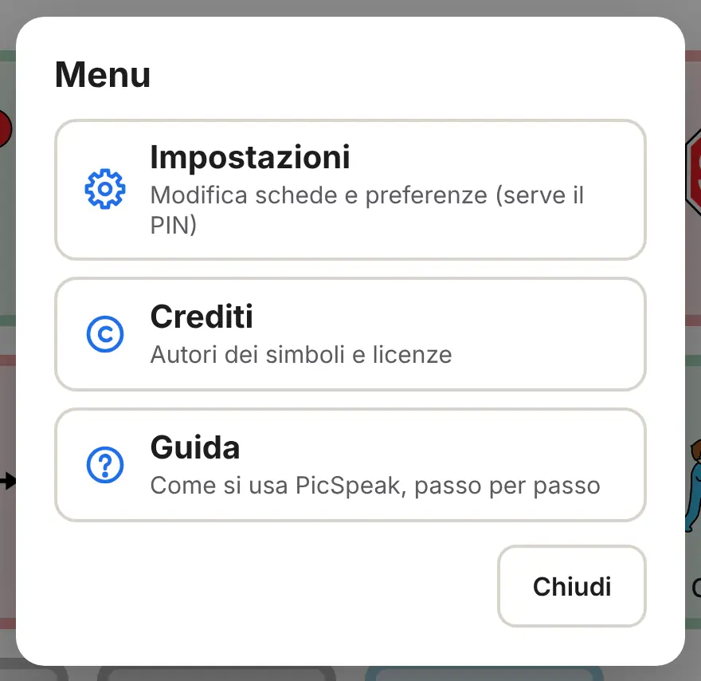
- Impostazioni: chiede il PIN e permette di modificare tutto (vedi sotto).
- Crediti: autori dei simboli, licenze e privacy. Non serve il PIN.
- Guida: apre questa pagina. Non serve il PIN.
La guida si apre anche da ImpostazioniGeneraleApri la guida.
Creare il PIN e sbloccare le impostazioni
La prima volta
- Aprite il menu e scegliete Impostazioni.
- Scrivete un PIN da 4 a 6 cifre, ripetetelo e toccate Conferma.
- PicSpeak mostra un codice di recupero: annotatelo o fotografatelo e conservatelo in un posto sicuro. Serve se dimenticate il PIN e non verrà mostrato di nuovo.
- Toccate Ho annotato il codice: le impostazioni sono sbloccate.

Le volte successive
Menu → Impostazioni → scrivete il PIN → Conferma.
Con le impostazioni sbloccate
In alto compare una barra scura e ogni tessera ha una matita: toccandola si apre la sua modifica.
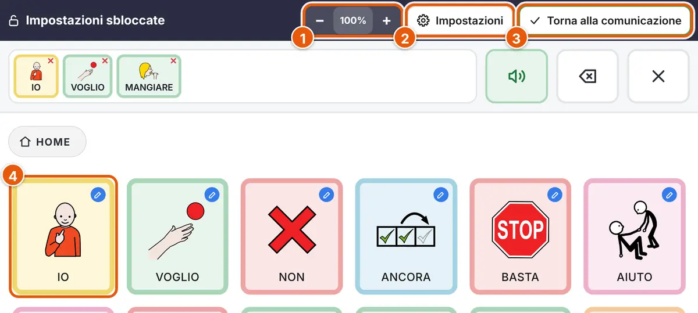
- − 100% +: misura delle tessere (vedi Ingrandire o rimpicciolire).
- Impostazioni: apre tutte le categorie.
- Torna alla comunicazione (sul telefono Fine): richiude tutto e torna alla modalità del bambino.
- Toccando una tessera si apre la sua modifica (vedi Aggiungere o cambiare una tessera).
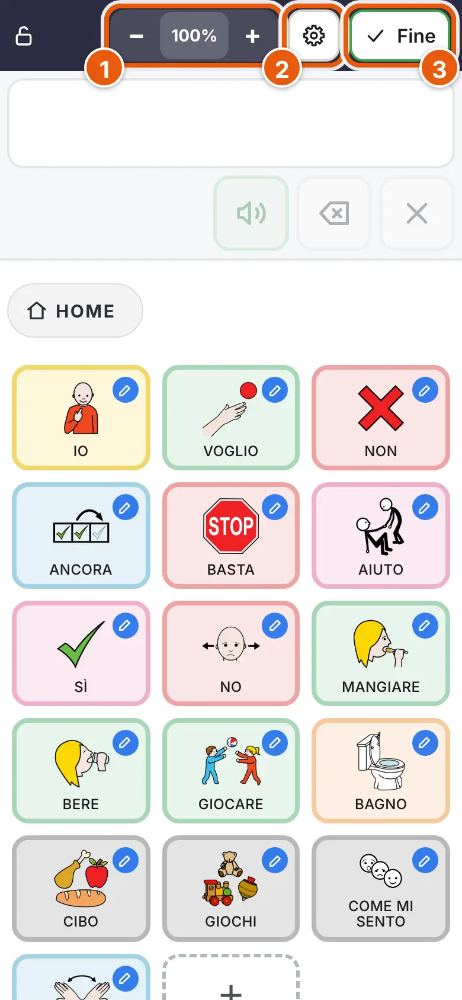
Dopo 5 minuti senza tocchi PicSpeak torna da solo alla modalità di comunicazione.
Cambiare il PIN
ImpostazioniSicurezzaCambia PIN: serve il PIN attuale.
Trovare una voce nelle impostazioni
Le impostazioni sono divise in categorie, elencate a sinistra (sul telefono una sotto l’altra: toccatene una per aprirla e Indietro per tornare all’elenco).
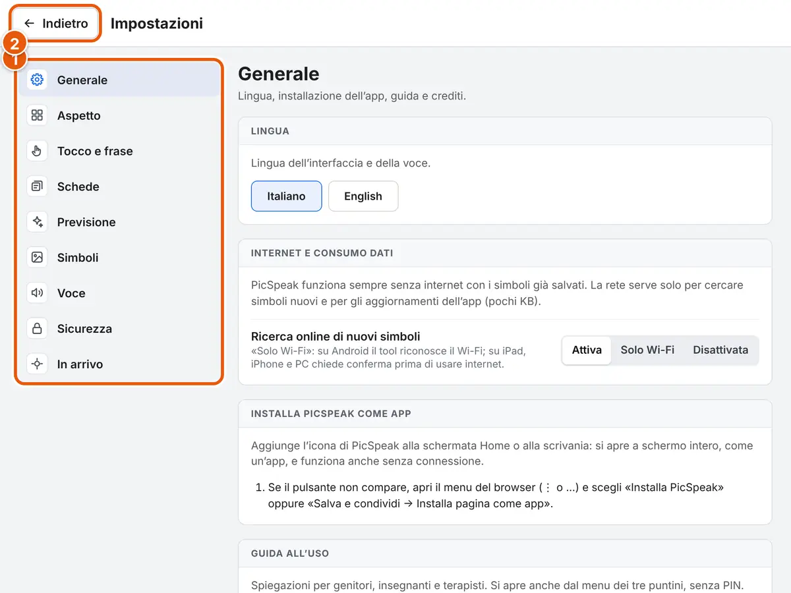
- Le categorie.
- Indietro: torna alla tabella (con le impostazioni ancora sbloccate).
| Generale | lingua, ricerca online dei simboli, installare come app, guida, crediti |
|---|---|
| Aspetto | stili pronti, colori, sfondo, simboli, testo, celle, posizione della frase, gesti |
| Tocco e frase | pulsanti «Ops» e «Aiuto», frasi rapide, tempo di pressione, tocchi ripetuti, comportamento della frase |
| Schede | schede pronte, i miei modelli, importa ed esporta, altre app, stampa, disposizione e posizioni, colori per tipo di parola |
| Previsione | suggerimenti della parola successiva e abitudini d’uso |
| Simboli | ARASAAC, Mulberry, OpenMoji, foto personali |
| Voce | voce, velocità, tono, come avere una voce più naturale |
| Sicurezza | cambiare il PIN, accesso guidato |
| In arrivo | le funzioni previste nelle prossime versioni |

Preparare le schede
Partire da una scheda pronta
ImpostazioniSchedeSchede pronte
Sono punti di partenza costruiti secondo le indicazioni degli esperti di Comunicazione Aumentativa: poche parole di base (io, voglio, ancora, basta, aiuto, sì, no, dove?…) che servono in ogni situazione, sempre nello stesso posto perché la mano impari dove andare, colorate per tipo di parola, e cartelle per tutto il resto (cibo, giochi, persone, luoghi, corpo, vestiti, scuola…).
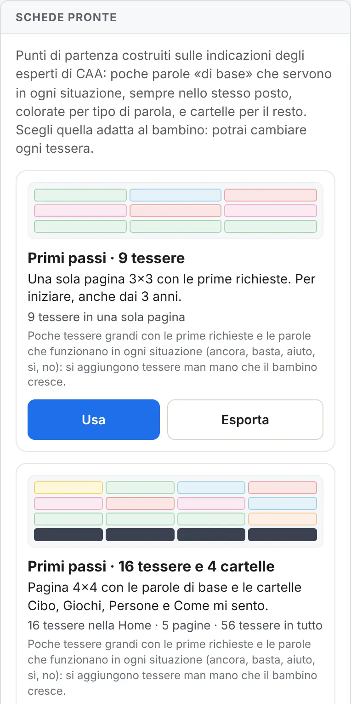
| Primi passi · 9 tessere | una pagina 3×3 con le prime richieste. Per iniziare, anche dai 3 anni. |
|---|---|
| Primi passi · 16 tessere e 4 cartelle | pagina 4×4 con Cibo, Giochi, Persone e Come mi sento. |
| Parole di base · 36 tessere e 7 cartelle | griglia 6×6, per tablet o telefono in orizzontale. |
| Parole di base · 60 tessere e 12 cartelle | griglia 10×6 per tablet e PC, con le domande. |
- Toccate Usa sotto la scheda scelta.
- Scegliete Diventano le schede del bambino (sostituiscono quelle attuali) oppure Aggiungi come cartella nella Home (le schede attuali restano e se ne aggiunge una cartella).
- PicSpeak scarica una sola volta i pittogrammi (serve internet, circa 10 KB per immagine). Da quel momento funziona anche senza connessione.

Ogni tessera di una scheda pronta si può poi cambiare, nascondere o togliere come tutte le altre.
Sostituito per sbaglio? Nella stessa pagina, sezione Recupero, c’è Ripristina le schede di prima. Se mancava internet le tessere mostrano solo la parola: appena siete collegati toccate Scarica … pittogrammi nella sezione Recupero. Con la ricerca online su Solo Wi-Fi, se PicSpeak non capisce che rete state usando non scarica nulla: i pittogrammi li scaricate voi da Recupero quando siete in Wi-Fi.
Aggiungere o cambiare una tessera
- Sbloccate le impostazioni.
- Toccate la tessera da cambiare, oppure la tessera + in fondo alla pagina per crearne una nuova (scegliendo Tessera o Cartella). Si apre la finestra di modifica.
- Scrivete la Parola e scegliete l’Immagine (Cerca simbolo oppure Foto o immagine dal dispositivo).
- Toccate Salva.

- Parola
- il testo sotto l’immagine.
- Parola pronunciata
- facoltativa: se la voce deve dire qualcosa di diverso da quello scritto.
- Tipo di parola
- dà il colore (vedi Colorare le parole per tipo). Viene proposto da solo mentre scrivete o scegliete un simbolo ARASAAC.
- Colore
- «A» usa il colore del tipo di parola; si può sceglierne un altro.
- Immagine
- Cerca simbolo, Foto o immagine dal dispositivo, oppure Togli immagine per lasciare solo la parola.
- Nascosta
- toglie la tessera dalla vista senza cancellarla.
- Posizione bloccata
- la tessera non si può spostare.
- ← Prima / Dopo →
- sposta la tessera di un posto (non compaiono se la posizione è bloccata).
- Elimina
- cancella la tessera (chiede conferma).
Per una cartella (una tessera che apre un’altra pagina): toccate +, in cima alla finestra scegliete Cartella invece di Tessera, scrivete il nome e salvate. Poi apritela e aggiungete le sue tessere con +.
Con le impostazioni sbloccate, toccare un’immagine nella striscia frase la toglie dalla frase.
Spostare le tessere
- Sbloccate le impostazioni.
- Tenete premuta una tessera per mezzo secondo: si «stacca» e segue il dito (o il mouse).
- Trascinatela dove volete: le altre si spostano per farle posto.
- Lasciatela: il nuovo ordine si salva da solo.
Un tocco breve, invece, apre la modifica. In alternativa usate ← Prima e Dopo → nella modifica della tessera.
Le tessere con la posizione bloccata non si spostano: togliete prima il blocco (vedi Tenere le tessere sempre allo stesso posto).
Cercare un simbolo o usare una foto
- Nella modifica della tessera toccate Cerca simbolo.
- Scrivete una parola semplice, meglio al singolare («mela», «bere»), e toccate Cerca.
- Prima compaiono i simboli già sul dispositivo (subito, anche senza internet), poi quelli di ARASAAC e delle altre raccolte attive.
- Toccate l’immagine scelta: viene salvata sul dispositivo e funzionerà anche offline.
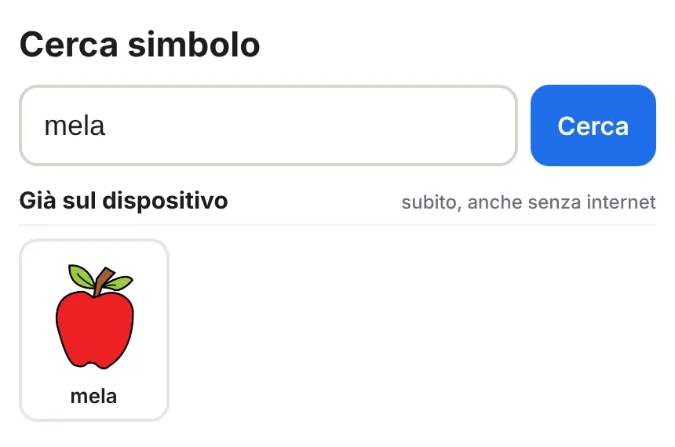
Per una foto (persone, oggetti e luoghi reali della persona) toccate invece Foto o immagine dal dispositivo.
Scegliere le raccolte di simboli
ImpostazioniSimboli
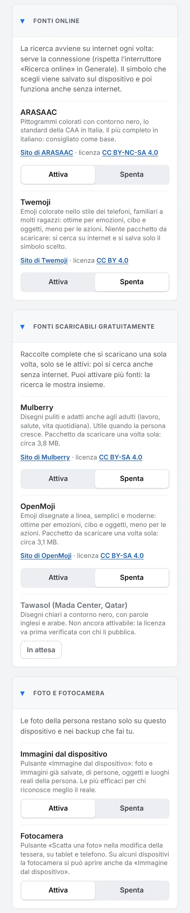
- ARASAAC: pittogrammi colorati, lo standard della CAA in Italia. Consigliato come base.
- Mulberry: disegni puliti, adatti anche agli adulti (circa 3,8 MB, da scaricare una volta).
- OpenMoji: emoji a linea, ottime per emozioni, cibo e oggetti (circa 3,1 MB, una volta).
- Foto personali: le più efficaci per chi riconosce meglio il reale.
Se un simbolo non si trova provate un sinonimo o una parola più semplice. Si può anche salvare la tessera con la sola parola, o con una foto.
Colorare le parole per tipo
Ogni tessera prende il colore del suo tipo di parola (chiave di Fitzgerald modificata): aiuta a costruire la frase e a ritrovare le tessere.

- Aprite la modifica della tessera.
- In Tipo di parola scegliete Persone, Azioni, Cose, Descrizioni, Sociali, Negazioni, Domande o Collegamento.
- Lasciate il Colore su «A» per usare il colore del tipo, oppure sceglietene un altro.
- Toccate Salva.
Per le parole note il tipo viene proposto da solo. Per togliere i colori a tutte le tessere scegliete la modalità colori «Neutro» in ImpostazioniAspetto.
Tenere le tessere sempre allo stesso posto
ImpostazioniSchedeDisposizione e posizioni
Quando una parola sta sempre nello stesso punto, con il tempo la mano ci va da sola, come sulla tastiera.
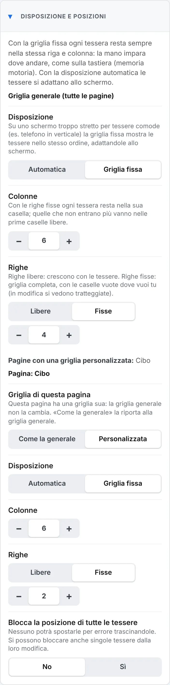
- Aprite la pagina da sistemare (per esempio una cartella), poi le impostazioni.
- In Disposizione di questa pagina scegliete:
- Automatica: le tessere si adattano allo schermo (poche tessere = tessere grandi);
- Griglia fissa: ogni tessera resta nella sua riga e colonna e scegliete quante colonne. Se nascondete o eliminate una tessera il suo posto resta vuoto e le altre non si spostano.
- Se volete, attivate Blocca la posizione di tutte le tessere: nessuno potrà spostarle per errore. Una sola tessera si blocca dalla sua modifica («Posizione bloccata»).
Su uno schermo troppo stretto (per esempio un telefono in verticale con una griglia di 6 o 10 colonne) le tessere restano nello stesso ordine ma si adattano allo schermo: per una griglia grande usate sempre lo stesso tablet, nello stesso verso. Con la griglia fissa i pulsanti − e + non cambiano la misura. Nelle schede pronte le tessere della Home sono già bloccate.
Ingrandire o rimpicciolire le tessere
- Sbloccate le impostazioni.
- Nella barra scura in alto toccate − o +: le tessere cambiano a passi del 10%.
- Mentre regolate, la pagina si mostra esattamente come la vedrà il bambino (la barra dice «Anteprima»). Il primo tocco fuori da − e + torna alla modifica.
Toccando la percentuale si torna alla misura automatica (100%, che riempie lo schermo). Le tessere non diventano mai più piccole di un dito.
Adattare PicSpeak alla persona
Aggiungere «Ops», «Aiuto» e frasi rapide
ImpostazioniTocco e frasePulsanti rapidi
Sono pulsanti sempre visibili, in ogni pagina, accanto al percorso «Home» (sul telefono in una riga sotto). Parlano subito e non entrano nella frase. All’inizio sono spenti.

- Ops: dice «Ops, ho sbagliato» e toglie l’ultima parola dalla frase. Un modo semplice per correggersi da soli.
- Frasi rapide: fino a 6 frasi brevi da dire al volo.
- Aiuto (rosso): dice «Ho bisogno di aiuto!». Con il suono di allarme prima suonano tre note forti, per farsi sentire da lontano. Alzate il volume del dispositivo.
- Mettete su Sì i pulsanti che volete: Pulsante «Ops», Pulsante «Aiuto» (ed eventualmente Suono di allarme), Frasi rapide.
- Per le frasi rapide: cambiate il testo scrivendo nei campi, toccate Togli per toglierne una, scrivete nell’ultimo campo e toccate Aggiungi per aggiungerne una.
- Tornate alla comunicazione: i pulsanti sono nella riga del percorso. Se non entrano tutti, la riga scorre di lato.


Aiutare chi ha tremori o tocca per sbaglio
ImpostazioniTocco e fraseTocco
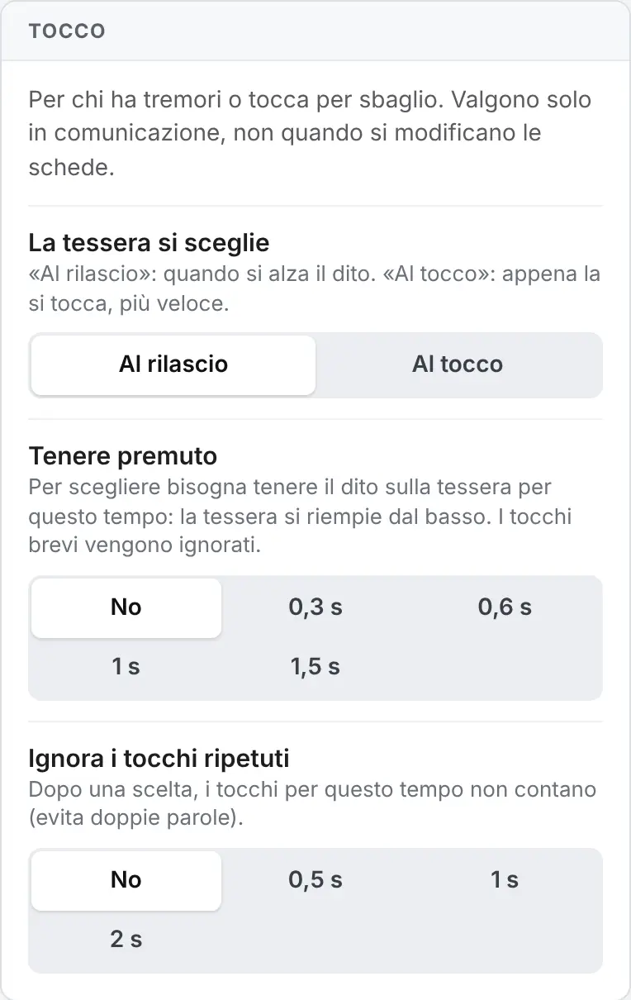
- La tessera si sceglie «al rilascio» (quando si alza il dito: si può ancora scivolare via se si è sbagliato) oppure «al tocco» (appena si appoggia il dito: più veloce).
- Tenere premuto (0,3 – 1,5 secondi): per scegliere bisogna tenere il dito sulla tessera; intanto la tessera si riempie di azzurro dal basso. Alzando il dito prima non succede nulla. Piccoli movimenti del dito sono tollerati.
- Ignora i tocchi ripetuti (0,5 – 2 secondi): dopo una scelta gli altri tocchi non contano. Evita le parole doppie quando il dito rimbalza.
Queste regole valgono solo mentre il bambino comunica: con le impostazioni sbloccate le tessere si aprono con un tocco normale.
Decidere come si comporta la frase
ImpostazioniTocco e fraseFrase
- Pronuncia: «Ogni parola» (si sente subito ogni tessera) oppure «Solo la frase» (le tessere si aggiungono in silenzio e si sentono toccando l’altoparlante). Utile per chi costruisce frasi lunghe.
- Cancella dopo la lettura: quando la voce ha finito di leggere la frase, la striscia si svuota da sola.
- Torna alla Home: dopo una parola presa in una cartella (per esempio «mela» in «Cibo») si torna da soli alla pagina principale.
La posizione della striscia (in alto o in basso) e dei suoi pulsanti (a destra o a sinistra, per chi usa la mano sinistra) si sceglie in ImpostazioniAspettoDisposizione e tocco.
Suggerire la parola successiva
ImpostazioniPrevisione
PicSpeak impara quali parole il bambino mette una dopo l’altra (per esempio «io → voglio → mangiare») e può evidenziare con un bordo blu le tessere che probabilmente userà subito dopo, oppure la cartella che le contiene. Le tessere non si spostano e non cambiano misura.

- Mettete Mostra i suggerimenti su Sì (all’inizio è spento).
- In Tessere evidenziate scegliete quante (da 1 a 3).
- Lasciate acceso Registra le abitudini (lo è fin dall’inizio): i suggerimenti compaiono dopo che una sequenza è stata usata almeno un paio di volte di recente.
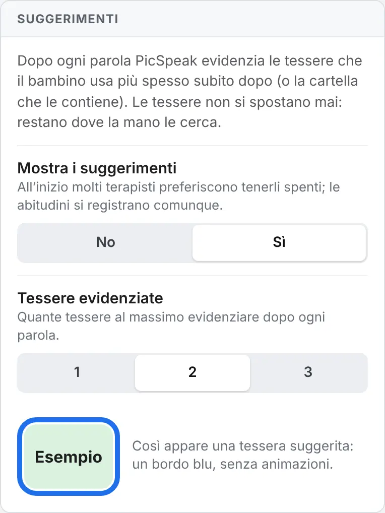
- Si registrano solo le tessere toccate in comunicazione, mai durante la modifica.
- Le abitudini recenti contano di più; quelle vecchie si affievoliscono da sole in qualche settimana (per esempio, finita la vacanza al mare). Conta anche l’ora del giorno.
- Nella stessa pagina vedete quante parole sono state registrate e potete cancellare le abitudini registrate.
Tutto viene calcolato su questo dispositivo, anche senza internet: nessun dato viene inviato.
Cambiare l’aspetto della tabella
ImpostazioniAspetto
- In Stili pronti toccate lo stile più vicino a quello che cercate.
- Se serve, cambiate i dettagli più sotto: ogni scelta si vede subito.
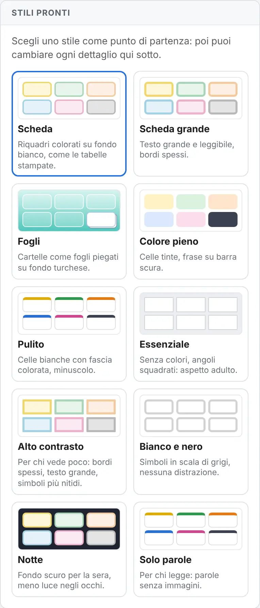
- Modalità colori (Scheda, Fogli, Colore pieno, Bordo colorato, Neutro) e colore di sfondo.
- Simboli: a colori, in bianco e nero o con più contrasto; immagine e parola, solo immagine o solo parola; parola sopra o sotto.
- Testo: MAIUSCOLO, minuscolo o come scritto; dimensione; carattere ad alta leggibilità.
- Celle: spazio, bordi, angoli, trasparenza.
- Disposizione e tocco: striscia frase in alto o in basso, pulsanti a destra o a sinistra, nome della pagina, evidenziazione al tocco, gesti «Scuoti per ricominciare» e «Spingi via la frase».
Pensate alla persona: chi si distrae con i colori sta meglio con «Bianco e nero» o «Essenziale»; chi vede poco con «Alto contrasto»; la sera «Notte»; chi legge può passare a «Solo parole». L’aspetto può crescere con la persona.
Scegliere la voce
ImpostazioniVoce
- Scegliete la Voce dall’elenco («Automatica» prende la migliore disponibile).
- Regolate Velocità e Tono.
- Toccate ▶ Prova la voce.
PicSpeak usa le voci già presenti sul dispositivo. Se la voce sembra metallica, nella stessa pagina trovate i passi per installare gratis una voce più naturale (iPad e iPhone, Mac, Android, Windows). Dopo averla installata, chiudete e riaprite PicSpeak e sceglietela.
Condividere e stampare
Salvare, esportare e importare le schede
ImpostazioniSchedeI miei modelli

- Salva le schede attuali come modello: tiene una copia su questo dispositivo, da riusare (per un altro bambino o per ricominciare). Fino a 20 modelli.
- Esporta le schede attuali in un file: crea un file con tutte le schede, le immagini e le foto. Lo trovate tra i download (su iPad e iPhone nell’app File) e potete mandarlo a casa, a scuola o al terapista. Anche ogni scheda pronta e ogni modello ha il suo Esporta.
- Importa un modello da file: apre un file esportato da PicSpeak; potete salvarlo tra i modelli oppure usarlo subito.
Il file contiene le foto personali: condividetelo solo con persone di fiducia. Non contiene il PIN né le abitudini d’uso del bambino.
Scambiare schede con altre app (.obf, .obz)
ImpostazioniSchedeScambio con altre app
L’Open Board Format è un formato aperto usato da diverse app di comunicazione (per esempio CoughDrop, Board Builder di Global Symbols, Asterics Grid). Un file .obf contiene una scheda; un file .obz un pacchetto con più schede collegate e le loro immagini.

Importare
- Toccate Importa un file .obf o .obz e scegliete il file.
- PicSpeak dice quante schede e tessere contiene e se qualcosa non si è potuto portare.
- Salvatelo tra i vostri modelli oppure usatelo subito.
- Posizioni, colori, parole e frasi pronunciate restano come nell’altra app; il tipo di parola viene proposto da solo.
- Le tessere-comando dell’altra app (cancella, leggi, home…) non si importano: in PicSpeak ci sono già.
- Le schede con più di 12 colonne vengono ridisposte su 12 colonne.
- Le immagini indicate solo con un indirizzo internet non vengono scaricate (tranne i pittogrammi ARASAAC): quelle tessere mostrano la parola e potete scegliere voi un simbolo.
- Autore e licenza di ogni immagine compaiono nei Crediti. Se un’immagine non dichiara una licenza, PicSpeak ve lo dice: controllate di poterla usare prima di condividere le schede.
Esportare
- Esporta tutte le schede (.obz): tutte le schede del bambino, con immagini e cartelle.
- Esporta questa scheda (.obf): solo la scheda aperta.
Ogni immagine porta con sé autore e licenza. Tipo di parola, tessere bloccate e griglia fissa tornano uguali se riaprite il file in PicSpeak.
I pittogrammi ARASAAC hanno licenza CC BY-NC-SA: i file si possono condividere ma non usare per scopi commerciali. Contengono anche le foto personali: condivideteli solo con persone di fiducia.
Stampare o salvare in PDF
ImpostazioniSchedeStampa
Una tabella di carta è utile quando il tablet è scarico, al mare, in piscina o a scuola.
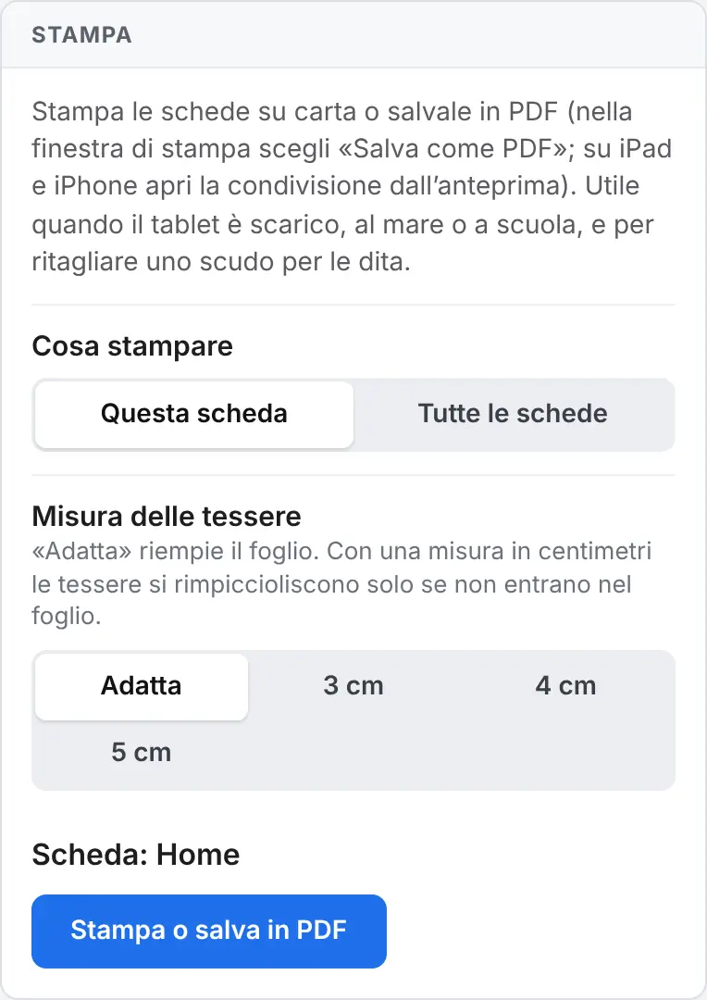
- Scegliete Questa scheda (quella aperta) oppure Tutte le schede (una per foglio, a partire dalla Home).
- Scegliete la misura delle tessere: «Adatta» riempie il foglio; 3, 4 o 5 cm danno tessere di misura precisa, utili anche per ritagliare uno scudo (keyguard).
- Toccate Stampa o salva in PDF: si apre la finestra di stampa del browser.
- Per il PDF scegliete «Salva come PDF» come stampante; su iPad e iPhone toccate il pulsante di condivisione nell’anteprima e salvate nell’app File.
Le tessere mantengono posizione e colori; quelle nascoste non si stampano. In fondo a ogni foglio c’è il credito dei pittogrammi, come chiede la licenza.
Dispositivo, sicurezza e dati
Installare come app e usarla senza internet
ImpostazioniGeneraleInstalla PicSpeak come app
- Seguite le istruzioni mostrate per il vostro dispositivo. Se il pulsante non compare, aprite il menu del browser (⋮ o …) e scegliete «Installa PicSpeak», «Aggiungi alla schermata Home» oppure «Salva e condividi → Installa pagina come app».
- L’icona compare nella schermata Home: PicSpeak si apre a schermo intero e funziona anche senza connessione.
Internet e consumo dati
PicSpeak funziona sempre senza internet con i simboli già salvati. Internet serve solo per cercare simboli nuovi e per gli aggiornamenti (pochi KB). In ImpostazioniGeneraleRicerca online di nuovi simboli scegliete Attiva, Solo Wi-Fi oppure Disattivata. Con «Solo Wi-Fi», su iPad, iPhone e PC PicSpeak chiede conferma prima di usare internet.
Tenere il bambino dentro PicSpeak
Tablet e telefoni hanno una funzione che impedisce di uscire dall’app senza un codice. Va attivata una volta nelle impostazioni del dispositivo; i passi sono anche in ImpostazioniSicurezza.
iPad e iPhone: Accesso guidato
- Aprite Impostazioni → Accessibilità → Accesso guidato e attivatelo.
- In «Impostazioni codice» scegliete un codice (può essere diverso dal PIN di PicSpeak).
- Aprite PicSpeak e premete tre volte il tasto laterale (o il tasto Home), poi toccate «Avvia».
- Per uscire premete di nuovo tre volte e inserite il codice.
Android: Blocco app
- Aprite Impostazioni → Sicurezza (o «Sicurezza e privacy») → Altre impostazioni → «Blocco app» o «Fissa app» e attivatelo.
- Aprite PicSpeak, poi la schermata delle app recenti.
- Toccate l’icona di PicSpeak in alto e scegliete «Fissa» o «Blocca».
I nomi dei menu cambiano un po’ tra le diverse marche.
Sapere dove restano i dati
Tessere, foto e impostazioni restano solo su questo dispositivo, nel browser. Non ci sono account e nessun dato della persona viene inviato su internet: quando cercate un simbolo esce soltanto la parola cercata.
Cancellare i dati di navigazione del browser per questo sito cancella anche le tessere personalizzate. Per avere una copia usate Esporta le schede attuali in un file (vedi Salvare, esportare e importare). Il backup completo, con impostazioni e abitudini d’uso, è in arrivo.
Trovare crediti e licenze
Dal menu dei tre puntini scegliete Crediti (non serve il PIN); gli stessi testi sono in ImpostazioniGeneraleCrediti e licenze. Trovate gli autori dei simboli usati, le licenze e le informazioni sulla privacy.
Se usate i pittogrammi ARASAAC anche fuori da PicSpeak (per esempio stampati), riportate questa frase:
Autore dei pittogrammi: Sergio Palao. Origine: ARASAAC (http://www.arasaac.org). Licenza: CC (BY-NC-SA). Proprietario: Governo di Aragona (Spagna).
PicSpeak è gratuito e non commerciale; il suo codice ha licenza GNU GPL-3.0.
Aiuto
Stampare questa guida
La guida si può tenere su carta, per esempio nel quaderno della logopedia o da lasciare a scuola.
- Toccate Stampa in alto a destra in questa pagina. La guida si prepara per fogli A4, con tutte le immagini e il numero di pagina in fondo.
- Nella finestra di stampa scegliete la stampante, oppure «Salva come PDF» per avere un file. Su iPad e iPhone toccate il pulsante di condivisione nell’anteprima e salvate nell’app File.
- Se la stampante propone un altro formato (per esempio «Letter»), scegliete A4.
Per stampare solo una parte, indicate le pagine nella finestra di stampa. Con il computer si può usare anche la scorciatoia Ctrl+P (su Mac ⌘+P): il risultato è lo stesso.
Se qualcosa non va
- Ho dimenticato il PIN.
- Nella finestra del PIN toccate PIN dimenticato? e scrivete il codice di recupero.
- Il bambino ha aperto il menu.
- Senza il PIN può solo leggere i crediti o questa guida; «Chiudi» o «Torna a PicSpeak» riportano alla tabella. Nulla viene modificato.
- Il menu non si apre.
- Tenete il dito fermo sui tre puntini per 3 secondi interi, finché la barra blu in alto è piena.
- Le tessere sono troppo piccole o troppo grandi.
- Usate − e + nella barra in alto con le impostazioni sbloccate (vedi Ingrandire o rimpicciolire). Con la griglia fissa la misura dipende dal numero di colonne.
- Una tessera mostra solo la parola.
- Il pittogramma non è stato scaricato: collegatevi a internet e usate Scarica … pittogrammi in ImpostazioniSchedeRecupero, oppure scegliete un simbolo dalla modifica della tessera.
- Non si sente la voce.
- Controllate il volume e l’interruttore silenzioso del dispositivo, poi provate la voce in ImpostazioniVoce. Con «Solo la frase» le parole si sentono solo toccando l’altoparlante.
- Una tessera non risponde al tocco.
- Forse è attivo «Tenere premuto» o «Ignora i tocchi ripetuti» (vedi Tocco).
- Non riesco a spostare una tessera.
- È bloccata: togliete «Posizione bloccata» dalla sua modifica, oppure «Blocca la posizione di tutte le tessere» (vedi Posizioni).
- Ho sostituito le schede per sbaglio.
- ImpostazioniSchedeRecuperoRipristina le schede di prima.
Indice delle parole dalla A alla Z
- Abitudini d’uso
- Accesso guidato
- Aiuto (pulsante)
- Alto contrasto
- ARASAAC
- Bianco e nero
- Blocco delle posizioni
- Cartella
- Cerca simbolo
- Codice di recupero
- Colori per tipo di parola
- Crediti
- Dati e privacy
- Esporta
- Fitzgerald
- Foto personali
- Frasi rapide
- Gesti
- Griglia fissa
- Importa
- Installare come app
- Internet
- Misura delle tessere
- Modelli
- Mulberry, OpenMoji
- Nascondere una tessera
- .obf / .obz
- Open Board Format
- Ops
- PIN
- Previsione
- Pronuncia
- Recupero
- Schede pronte
- Spostare le tessere
- Stampa della guida
- Stampa delle schede
- Stili pronti
- Tenere premuto
- Tremori
- Voce